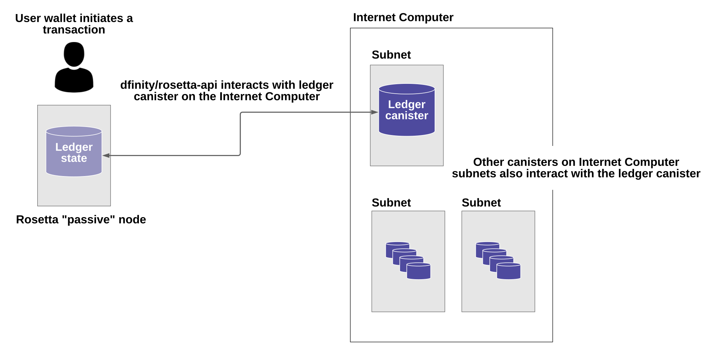

与互联网计算机账本集成
本指南介绍了用于代币分发、交易管理、基于代币的质押和服务支付的互联网计算机协议 (ICP) 组件。 该文档概述了支持互联网计算机协议代币管理的设计、实施、安全保证、系统要求和应用程序编程接口 (API)。
与互联网计算机账本集成 旨在为需要了解互联网计算机协议 (ICP) 实用程序代币的术语和整体事务管理流程的组织和开发人员提供高级概述。
当你阅读本指南时，请注意在随后的文件中可能会有关于特定组件或接口的额外细节，以补充本文件中提供的概述。 此外，本概述重点介绍如何与互联网计算机集成Rosetta API. 其他集成选项也是可能的。 未来的文档中可能会提供有关其他集成选项和过程的信息。
基本术语
互联网计算机是一个区块链系统，由多个子网区块链组成，用于运行 dapp。 当您编写在互联网计算机上运行的 dapp 时，您以一种称为 容器 的概念计算单元的形式部署您的程序。 容器是一种“智能合约”，它由程序的源代码及其运行状态组成，并在保证安全性和活性的子网区块链上复制。
最终用户或其他容器可以向容器功能发送消息以执行特定操作。 消息可以是在不修改容器状态的情况下检索信息的查询调用，也可以是可能修改容器状态的更新调用。 执行更新的顺序是在运行容器的子网中的所有节点之间使用共识协议商定的。
账本容器概述
互联网计算机协议（ICP）使用一个专门的容器，称为账本容器，实现对其实用代币（代号 "ICP"）的管理。 在互联网计算机的一个特殊子网（即 NNS 子网）上，有一个单一的账本容器与其他容器一起运行。 账本容器是一个智能合约，包含账户和交易。 这些交易要么为账户铸造 ICP 代币，从一个账户转移ICP 代币到另一个账户，要么燃烧 ICP 代币，使它们不复存在。 账本容器维护从其创世状态（初始状态）开始的所有交易的可追溯历史记录。
账户
帐户属于帐户所有者并由其控制，而帐户所有者必须是IC负责人。任何账户都不能由两个或更多的IC负责人拥有（没有 "联合账户"）。
一个账户所有者可以控制一个以上的账户。在这种情况下，每个账户对应一对(account_owner, sub_account)。子账户是一个可选的位串，有助于区分同一所有者的不同子账户。
分类账上的一个账户由其地址识别，该地址由主账户ID和子账户标识符得出。
在这种情况下，您可以将主体标识符视为粗略等同于比特币或以太坊的用户公钥的哈希值。 您使用相应的密钥对消息进行签名，从而对分类帐容器进行身份验证并在委托人的帐户上进行操作。 容器也可以在分类帐容器中拥有帐户，在这种情况下，地址来自容器的本金。
分类帐容器使用互联网计算机内部的管理操作进行初始化。 作为初始化过程的一部分，容器是使用一组帐户和关联的 ICP 代币余额创建的。
使用 Rosetta API 与 Internet Computer 分类帐容器集成
可以通过多种方式与互联网计算机和分类帐容器进行交互。 本文档概述了如何使用 Rosetta application programming interface. Rosetta API 旨在支持多种区块链数据格式和用于交易所交易的结构化通信。
接口由集成软件—— dfinity/rosetta-api 实现。 该软件使您能够在互联网计算机区块链之外部署一个被动 Rosetta 节点，并使用该节点与互联网计算机上运行的分类帐容器进行通信。
下图提供了 Rosetta 节点和互联网计算机之间使用 dfinity/rosetta-api 集成软件进行通信的简化视图。

正如该图所示，Rosetta 节点维护 Internet Computer 帐本容器的本地副本。
在 Rosetta 节点上运行的 dfinity/rosetta-api 软件会定期更新其本地账本视图，方法是向账本容器查询账本链的最新块，然后查询任何丢失的账本块。
Rosetta 节点使用互联网计算机的根密钥来确保账本的本地副本是真实的。
集成软件还允许您使用 Rosetta 节点向 Internet Computer 帐本提交交易。
集成工作流程概述
下面总结了如果你使用Rosetta节点与Internet Computer账本容器通信，转移ICP代币的基本操作流程。在这种情况下，你必须是一个Internet Computer主体，使用存储在钱包中的签名密钥对Internet Computer进行认证。
用户向Rosetta节点提交交易请求后，该请求被传递给该节点上运行的集成软件与Internet Computer交互并完成以下操作：
-
它从账本的本地副本中读取，以确定由
latest_index标签标识的最新交易索引和块高度的状态。 -
它生成一个随机的
nonce值——用于确保交易是唯一的。 -
它为调用
send函数并指定交易金额和目的地的分类帐容器创建一个入口消息：发送（nonce，latest_index，dst，数量）
-
它使用存储在钱包中的密钥对入口消息进行签名，以识别所有者的主体 ID。
-
它将消息转发到互联网计算机上的分类帐容器。
设置 Rosetta 节点
您可以设置符合 Rosetta API 的节点来与互联网计算机交互并交换互联网计算机协议 (ICP) 代币。 为了使说明简单，我们使用 Docker 映像来创建与 Rosetta API 的集成——也可以使用源代码构建和运行二进制文件。 如果您的本地计算机上还没有 Docker，请下载并安装最新版本。
设置 Rosetta 节点（连接到测试网）：
-
Install Docker 和 start the Docker daemon.
当您重新启动计算机时，Docker 守护进程 (
dockerd) 应该会自动启动。 如果您手动启动 Docker 守护程序，则说明因本地操作系统而异。 -
通过运行以下命令从 Docker Hub 中拉取最新的
dfinity/rosetta-api映像：docker pull dfinity/rosetta-api -
Start the integration software by running the following command:
docker run \ --interactive \ --tty \ --publish 8080:8080 \ --rm \ dfinity/rosetta-api此命令在本地主机上启动软件并显示类似于以下内容的输出：
Listening on 0.0.0.0:8080 Starting Rosetta API server
默认情况下，该软件*不*连接到运行在互联网计算机区块链主网上的帐本容器，而是连接到测试网。
如果您已经分配了一个测试网络和相应的帐本容器标识符，您可以通过指定一个额外的
canister参数来针对该网络运行该命令。 例如，以下命令说明了通过将canister参数设置为2xh5f-viaaa-aaaab-aae3q-cai来连接到测试网络上的帐本容器。docker run \ --interactive \ --tty \ --publish 8080:8080 \ --rm \ dfinity/rosetta-api --canister 2xh5f-viaaa-aaaab-aae3q-cai注释: 第一次运行命令时，节点可能需要一些时间才能赶上链的当前链接。 当节点被追上时，您应该会看到类似于以下内容的输出：
你们都被追到块高度 109
完成此步骤后，节点继续作为不参与出块的被动节点运行。
-
打开一个新的终端窗口或选项卡并运行
ps命令来验证服务的状态。如果您需要停止服务，请按 CONTROL-C。 例如，您可能希望这样做以更改您正在使用的容器标识符。
要在设置节点后测试集成，您需要编写一个程序来模拟主体提交交易或查找账户余额。
在生产中运行Rosetta节点
完成测试后，您应该在生产模式下运行 Docker 映像，不带 --interactive、--tty 和 --rm 命令行选项。
这些命令行选项用于附加交互式终端会话和删除容器，主要用于测试目的。
要在生产环境中运行该软件，您可以使用 --detach 选项启动 Docker 映像以在后台运行容器，并且可以选择指定 --volume 命令来存储块。
要将 Rosetta 节点实例连接到主网，请添加标志：
--mainnet 和 --not-whitelisted。
有关 Docker 命令行选项的更多信息，请参阅Docker reference documentation.
要求和限制
Docker 映像中提供的集成软件有一项要求，该要求不属于标准 Rosetta API 规范的一部分。
对于涉及 ICP 代币的交易，必须在网络收到签名交易前 24 小时内创建未签名交易。 原因是每个事务的 created_at 字段指的是现有事务（本质上是创建事务时本地可用的 last_index）。 任何提交的交易涉及太旧的交易都会被拒绝以维持运营效率。
除此要求外，Rosetta API 集成软件与所有标准 Rosetta 端点完全兼容，并通过了所有 rosetta-cli 测试。
该软件可以接受任何有效的 Rosetta 请求。
但是，集成软件仅提示使用 Ed25519 对交易进行签名，而不是 对所有数据签名 并且只回复规范支持的一小部分潜在响应。 例如，该软件没有实现 Rosetta 的任何 UTXO 功能，因此您不会在任何软件响应中看到任何 UTXO 消息。
ICP 实用代币的基本属性
ICP 代币类似于管理去中心化网络（如比特币）的实用代币，但在重要方面也有所不同。
ICP代币在以下方面与比特币相似：
-
每个 ICP 代币可整除 10^8 次。
-
所有交易都存储在账本中，从创建初始状态开始。
-
代币是完全可替代的。
-
账户标识符为 32 字节，大致相当于公钥的哈希值，可选地与一些额外的子账户说明符一起使用。
ICP 代币在以下方面与比特币不同：
-
质押的参与者节点不使用工作量证明，而是使用阈值 BLS 签名的变体来就链的有效状态达成一致。
-
任何交易都可以存储一个 8 字节的备忘录——Rosetta API 使用这个备忘录字段来存储区分交易的随机数。 不过，其他用途是可能的。
常问问题
以下问题摘自开发者社区最常报告的关于 Rosetta 与 Internet Computer 集成的问题和障碍。
Rosetta节点
如何运行 Rosetta 节点的实例？
一个简单的方法是使用dfinity/rosetta-api Docker 镜像. 一旦节点初始化并同步了所有区块，您就可以通过调用节点上的 Rosetta API 来执行查询和提交交易。 该节点侦听“8080”端口。
如何知道节点是否已经赶上了测试网？
搜索 Starting Rosetta API server 启动日志。 将会有一个日志条目显示 You are all caught up to block XX。 此消息确认您已了解所有块。
ICP 特定的 Rosetta API 详细信息
帐户是如何生成和验证的？
-
生成 ED25519 密钥对。
-
密钥用于签署交易。
-
公钥用于生成自我认证的主体 ID。 有关更多信息，请参阅link： https://sdk.dfinity.org/docs/interface-spec/index.html#_principals.
-
对主体 ID 进行哈希处理以生成帐户地址。
如何使用公钥生成其账户地址？
-
调用
/construction/derive具有十六进制编码的 32 字节公钥的端点。 -
调用 JavaScript SDK 中的
pub_key_to_address函数。
如何验证账户地址的校验和？
-
十六进制解码后，前 4 个字节是地址其余部分的大端 CRC32 校验和。
-
调用
address_from_hex在 JavaScript SDK 中。 如果校验和不匹配，它会返回并出错。 -
这里 是地址验证逻辑的 Java 实现。
什么样的交易可以出现在一个区块中，它们是什么意思？
-
查询的每个块
/block端点只包含一个事务。 请注意，Rosetta API 调用不支持某些操作，例如burn。 -
转移
-
操作0：输入
"TRANSACTION"，从源账户中减去转账金额。 -
操作1：输入
"TRANSACTION"，向目的账户添加相同的转账金额。 -
操作2：输入
"FEE"，从源账户中扣除费用。
-
-
不要依赖上面的顺序，你可以在
/construction/payloads调用中重新排列它们，当解析一个块中的交易时，你应该检查交易类型和金额符号。 -
铸币
-
操作0：输入
"MINT"，将铸币数量添加到目标账户。
-
-
燃烧
-
操作0：输入
"BURN"，从源账户中减去燃烧的数量。
-
-
"status"总是"COMPLETED"，失败的交易不会出现在轮询的区块中
需要什么费用？ 我可以自定义费用吗？
-
通过调用
/construction/metadata，你可以获得`suggested_fee`。 -
目前，
suggested_fee是一个常数，转账中指定的费用必须等于它。 -
费用不适用于铸币或燃烧操作。
如何知道提交的交易是否到达了链？
-
Rosetta 服务器会在
/construction/submit调用后等待一小段时间，如果交易命中链，它将被返回。 -
如果账本出现错误，错误信息将在
/construction/submit结果中提供。 -
/construction/submit调用仍有可能成功返回，但距离它到达链还有一段时间。您可以轮询最新的区块并搜索交易哈希。 我们还实现了一个子集/search/transactions允许在给定哈希值的情况下搜索交易的端点。 -
5 分钟是最坏情况下的超时。
-
不要使用
mempoolAPI，我们的实现是一个空存根。
我可能会从 Rosetta API 调用中得到哪些类型的错误？
-
成功的调用总是有
200响应状态码。 -
失败的调用总是有“500”响应状态码，带有一个包含更多信息的 JSON 有效负载。 可能的 Rosetta 错误代码及其文本描述可以在
/network/options调用结果中看到。
如何在不调用 Rosetta API 的情况下签署交易？
JavaScript SDK 包含一个implementation 离线签名逻辑。 这与内部实现细节密切相关，因此我们强烈建议您尽可能调用 /construction/combine 来签署交易。
如何配置入口时间段？
在 /construction/payloads 调用中，您可以添加一个或全部 ingress_start/ ingress_end 字段来指定入口时间段。 它们是 Unix 纪元以来的纳秒，并且必须在接下来的 24 小时内。 这可以生成和签署交易，但将实际提交延迟到以后。
如何反序列化已签名的交易？
JavaScript SDK 支持deserializing 一个 signed_transaction 十六进制字符串并恢复有关转移的一些信息。 这在您想要执行健全性检查的情况下可能很有用。